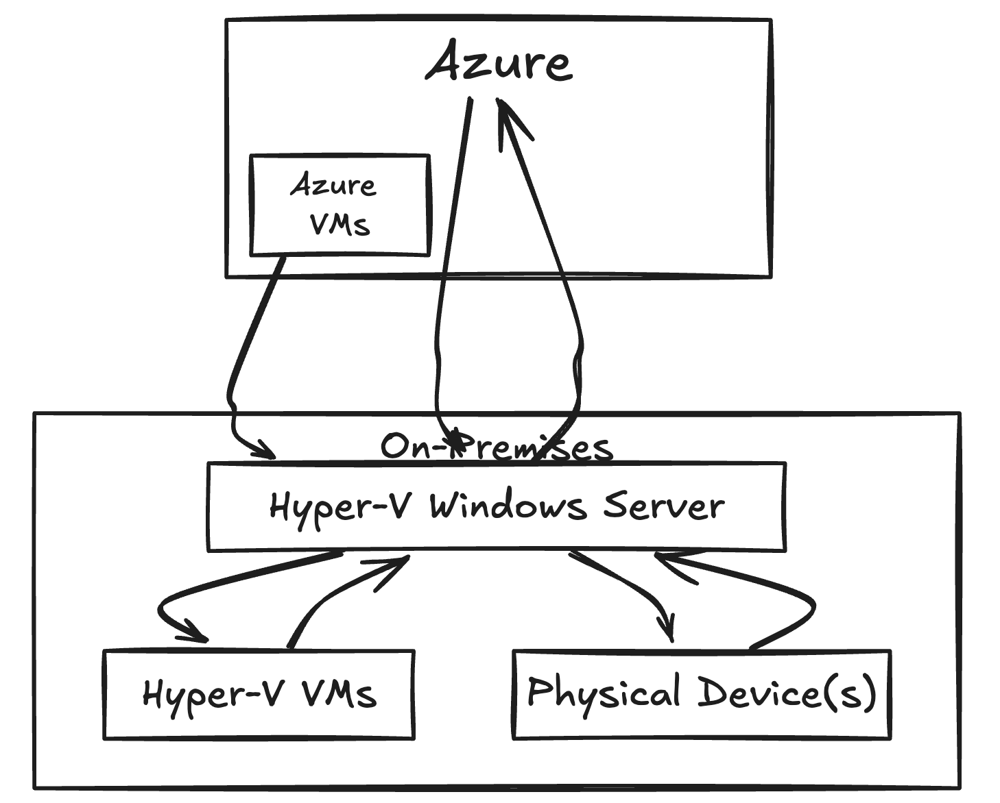

Windows Hybrid Domain Setup with and Azure
Designed and implemented a hybrid environment using
Hyper-V to create virtual machines and a server,
linking them with additional Hyper-V VMs, an Azure VM, and a physical
laptop.
I integrated Microsoft Entra/Entra Connect to enable
hybrid join capabilities, utilised Group Policy to
manage user and device configurations, and implemented
Intune for software deployment and device
configuration policies.
Key Highlights:
- 🌐 **Hybrid Integration**: Combined physical and virtual machines for flexible management.
- 🔗 **Entra Sync**: Enabled hybrid join for seamless integration.
- 🛡️ **Group Policy**: Applied policies for user restrictions and device configurations.
- 📦 **Intune Management**: Tested and deployed device configuration policies and software.

Hybrid Environment Architecture
Challenges Faced:
- 🛠️ **Configuration Complexity**: Managing settings across different environments was challenging.
- 🔄 **Group Policy Management**: Ensuring policies applied correctly to all devices required thorough testing.
- 🔍 **Testing Intune Policies**: Verifying device configuration policies took additional time and effort.

One of the many challenges - syncing sensitive data between on-prem and Entra ID
Areas for Improvement:
- ⚙️ **Automated Testing**: Implement automated testing for configuration policies.
- 🔔 **Documentation**: Improve documentation for easier replication of the setup process.
- 📈 **Performance Monitoring**: Integrate better monitoring tools for resource management.
Skills Demonstrated:
- ✅ **Hyper-V**: Proficient in creating/managing VMs to optimise resources.
- ✅ **Hybrid Environment Setup**: Experience in configuring both physical and virtual resources.
- ✅ **Microsoft Entra/ Entra Connect**: Familiarity with hybrid join capabilities and configurations.
- ✅ **Group Policy Management**: Applying and managing policies across various devices.
- ✅ **Intune Integration**: Deploying software and configuring devices efficiently.